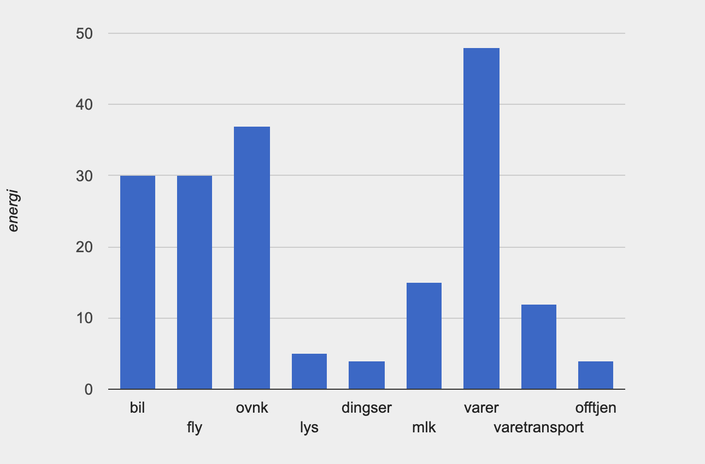

Om meg:
Mitt navn er Erik. Jeg er 24 år og kommer fra Arendal. Jeg studerer IT og informasjonssystemer på Universitet i Agder. Jeg går bachelor og gleder meg til jeg er ferdig (mye på grunn av det tar sykt lang tid å ta buss mellom Arendal og Kristiansand hver dag uh).
Så langt har jeg lært en del om prosjektledelse og startet med programmering. Har konkludert med at programmering er litt vanskeligere enn jeg hadde forestilt meg. Det var det, takk for meg ellerno.
Figuren jeg lagde i Pyret:

Figuren jeg har gjenskapt i Canvas API:
Figuren jeg har gjenskapt i SVG API:
Forbruk

Jeg har tenkt til å sammenligne meg med tabellen som vi brukte i proskjet oblig 2.
Først går jeg ut ifra bil. Jeg kjører nesten ikke bil. Stor sett bare fram og tilbake til trening så ville ikke sagt at jeg bruker mye energi her.
Når det kommer til fly så vil jeg svare at jeg ikke bruker energi på dette ettersom at jeg aldri har flydd før.
Oppvarming og nedkjøling betaler jeg ikke for siden jeg bort hjemme, men hvis jeg skal sammenligne med hvor mye energi som jeg er ansvarlig for å bruke ville jeg sagt en del, med tanke på at jeg har varmekabler i gulvet hjemme.
Lys bruker jeg og sier mener på at jeg bruker dette veldig gjennomsnittlig sammenlignet med andre.
Dingser vet jeg ikke helt hva betyr, men hvis det er mobiltelefon og nytt headsett, keyboard osv. så bruker jeg nok en del energi på det.
Jeg bruker ekstremt mye penger på mat. Selv om jeg bor hjemme kjøper jeg ekstremt mye mat, som oftest etter trening.
Usikker på hva varer mener, men hvis det betyr tøy så kjøper jeg nok mindre enn en gjennomsnittlig mengde tøy etter min egen mening.
Som regel lever jeg på det tøye jeg får til bursdagene mine og julaften.
Varetransport bruker jeg lite energi på. Jeg pleier ikke å bestille noe på nettet utenom kreatin monohydrat som skjer 2 ganger i året.
Jeg bruker sjeldent penger på offentlige tjenester. Det eneste jeg kan tenke meg til er at jeg er hos tannlegen 1 gang i året.